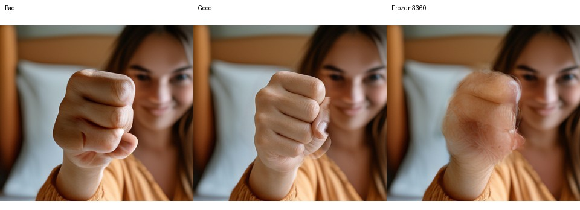

固定生成主干
核心实验使用原 Sana-0.6B、DC-AE 和文本编码器。早期训练独立外挂；后期改为 LoRA，只更新低秩适配参数。
Sana-0.6B 手部修复研究全记录
从数据构建、真实轨迹回退，到独立纠错模块、LoRA 与局部重绘。这里同时记录做成了什么、哪里失败了，以及哪些判断仍缺少证据。
目标是保留人物、原动作与接触关系，在已有手部区域中修正数量、关节和掌腕连接，而不是让图像仅仅更平滑。
核心实验使用原 Sana-0.6B、DC-AE 和文本编码器。早期训练独立外挂；后期改为 LoRA，只更新低秩适配参数。
部署输入是 Bad、已有 Mask 和原文本。使用 Good 直接注入方向、选最佳幅度或做重建的实验，均单列为离线诊断。
MAE、LPIPS、残差余弦和偏好分数回答不同问题。图表只保留各自的含义，助手初筛也不冒充独立人工验收。
“约 4,500 对”是数据资产规模，不是每轮模型实际训练的数量。
700 手部导向
300 自然人像
每文本 10 seeds
1024² · 20 steps
固定第二类队列
12,850 方法任务
Qwen 完成队列
其中 1,345 个都不要
943 个不同文本
全部 1024²
各节点含义不同：6,425 是固定待修案例，5,799 是 Qwen 完成后进入三选一页的案例；4,454 是人工采用快照。执行失败、未采用结果都保留，并非按自动评分剔除。批次证据 · 配对快照
Qwen 3,947 对（88.6%）；RealisHuman 507 对（11.4%）。来源不平衡不能被误写为两种编辑方法的胜率。
快照含 7,995 条手部记录、6,085 个目标手标记；检测 / 标注记录不保证等于独立真实手数量。4,454 对的 Mask 外总改变像素数为 0。Mask 是编辑支持区域，不是解剖分割真值。
| 用途 | 实际范围 | 划分与限制 |
|---|---|---|
| 历史配对资产 | 4,454 对 / 943 个不同文本 | Qwen 与 RealisHuman 都来自真实人工选择；Good 仍可能含姿态变化、接缝或歧义。 |
| 旧 LoRA 主数据池 | Qwen 3,947 → 检查后 3,942 对 | 排除既有 5 个隔离 / 姿态变化候选；按 prompt 组分为 3,181 训练 / 425 验证 / 336 历史测试。 |
| 旧 LoRA 有界试验 | 8 / 64 / 512 对；另有 210 对多 seed | 210 对由同 64 prompt 的 64 原对 + 146 新 seed 组成；不是 210 个新 prompt。 |
| 统一评分器 | 599 fit + 149 calibration prompt 组 | 独立于拟合的开发标签 444 张 / 63 组，含 312 采用、132 明确拒绝；未选另一方法不自动算坏。 |
| 最新 LoRA 去噪 SFT | 64 训练 + 8 开发 | 本轮 72 个 Good 全部匹配人工采用 Qwen 的记录；没有平衡两教师来源，没有扩至全量。 |
来源：LoRA 结果 · 评分器协议 · SFT 人工标签核验。这些划分不能直接拼接为一个统一训练 / 测试集。
按主要问题归纳已做路线。每一行保留实际规模、结果与来源；复杂实验不以单一“成功 / 失败”标签代替解释。
恢复原生成过程保存的 latent 和完整求解器历史，再继续采样。是原来的中间状态。已知 Good 的 Oracle 在这个状态上施加修正，只用于验证机制。
不加随机噪声，从纯 Bad latent 开始，用同一 Sana 启用 / 关闭 LoRA 的差分学习一次局部位移。纯端点只跑一步；不是多时间去噪，也不是蒸馏。
从输入图编码与数值反演建立保留区域约束，手部使用新随机噪声，通过遮罩求解器逐步去噪。反推的轨迹不等于原生成时保存的真实轨迹。
训练随机 t 和新噪声下的 Good：zₜ = (1−t)E(Good) + tε，目标为 ε − E(Good)。这是更新 LoRA 的去噪监督；训练时没有把 Bad + Mask 显式作为编辑条件输入 DiT。
各图注明评价对象。不同实验的指标、样本和预算不相同，不能横向当作算法排行榜。
纵轴是归一化端点 latent 误差比，越低越接近 Good；1 为保持 Bad 的误差水平。512 更新时训练 0.0286，开发 0.9140。训练手形能拟合，但开发未通过结构检查。阶段 11 记录
平均预测残差与目标残差的余弦相似度；越高越对齐。训练为固定 8 图探针，开发 / 同 prompt 新 seed 各 32 图。它是 latent 几何指标，不是解剖准确率。逐图诊断
210 对模型的 32 开发图，残差误差比越低越好。“最佳幅度”利用每图 Good，严格为离线诊断，不能部署；只约束缩放当前固定修正场，不排除其他目标或路径。数据与公式
8 组 Good 的 Mask 内 MAE（0–255），越低越接近原 Good。0 噪声是 VAE 重建。不是 Bad→Good 修复试验；低噪声保持结构不证明主动纠错能力。完整结果
它预测现有人工“采用 / 拒绝”标签，帮助排序候选。它没有被验证为可靠的手部解剖裁判。
手部上下文的视觉特征
形状 + 纹理 + 外观
已有手部 ROI 内的
通用伪影统计
骨架几何、检出状态
与镜像稳定性
冻结的正常 / 异常
检测证据与可用性
444 张有明确人工标签的开发图片；平衡准确率 =（采用样本召回 + 拒绝样本召回）÷ 2。全模块 70.2%，未显示稳定优于所有对照；来源等权差值的 95% 区间跨 0。完整消融
正类 = 人工采用，负类 = 明确拒绝。63 / 132 个拒绝样本仍被预测为“好”，坏样本召回仅 52.3%。未选中的备选结果和原 Bad 不自动用于绝对负类标签。
首版 DINO 在 Qwen 开发上 Good > Bad 达 99.65%，简单颜色 / 梯度统计也达 91.61%。这提示修复来源和纹理差异可能贡献很大。
第一版诊断 ↗固定 21 点模型可在坏手上给出完整骨架。诊断中 29 张人工拒绝图片仍有 23 张检出手；检出和左右手置信度不能替代解剖判断。
骨架诊断 ↗全模块在 8 张模糊压力样本中有 4 张升分；RGB 转灰度 / JPEG 后，8 组中 7 组最高分候选改变。现阶段只用于辅助排序。
压力测试 ↗训练和推理真正跑完，权重、同种子对照与单图入口已核验。它是可复现的研究结果，尚不是验收通过的修复模型。
不是 Bad + Mask 条件编辑训练；没有评分奖励梯度、GRPO 或自动伪标签回灌。512 步在开跑前指定，不是按开发分数挑选的检查点。
分数改善不均匀：握拳组均分 37.16 → 29.51，反而下降。部分指向候选指缝更清楚；其他候选仍有截断、错连或严重错画。
阅读完整结果 ↗每点为 10 个固定 seed 的平均分；数值越高，仅表示评分器越偏好。
所有组与 seed 均保留，未仅展示获益候选。8 个 prompt 组内的样本相关，不把 80 张当成 80 个独立 prompt。下载逐 seed 分数
开发第 4 组，seed 2026110509，评分 42.32。这张图暴露了排序问题：结构严重错画，仍高于本组其他 LoRA 候选。
它仍低于 43.22 的“好手”阈值，标签是 bad。因此这是排序错误，不能写成“已经被判成好手”；评分没有进入训练，也不是训练中的奖励攻击。
同一原图、原 Mask、原文本、同一噪声 seed，比较原模型与 LoRA。保留 Bad 和人工 Good 作为参照。
展示为已保存 WebP 预览（整图 384px、手部上下文 512px），不是无损原始 PNG。可点击图片单独放大；不据预览认证细微纹理。最终开发 8×10、训练示例 8×2；开发 128 / 256 更新各 8×2。Good 只展示作离线参考，推理不读取它。历史视觉记录是助手初筛。

左：Bad；中：Good；右：3,360 更新的端点模型。该图支持“未学会此开发手形”的判断，不用于推算全开发集成功率。它和最新 SFT 的训练数据、目标、推理流程均不同，不能视为单变量消融。
目前最缺的不是又一个更低的 loss，而是对未见图像有效、能被可靠评价的结构变化。
8 对端点模型能逼近特定 Good；增加到 64 / 210 对后，部分训练图仍未拟合，开发未见可靠收益。同 prompt 换 seed 也失败。
Good 可能改变手势、掌面可见性或接触方式。预测逐点 Bad–Good 差分可能同时学习外观搬运；观察到的监督歧义需要单独标记。
VAE 和已知 Good 注入显示部分结构可表达；偏好模型会接受纹理捷径、模糊或错画。能力检查与评价检查必须分开。
最新训练学习 Good 去噪先验，部署处理 Bad 反演与 Mask 回填。旧端点则学习直接位移。这种任务差异可能相关，尚不能宣布唯一原因。
Mask 外恒等来自最终像素合成，不能保证 Mask 内接缝自然。当前页面制作没有重新训练或重新采样。
原 A800 环境测量。热生成含 Bad 编码、Mask / 文本读取、采样、解码与整图回贴，不含 PNG 写盘；本轮生成器不裁剪。与旧实验不同计时口径不直接比较。
最新 LoRA 适配器 SHA256：
aff40bacc647076bf095ff39072c0c448d6806be6d2264b830f0cf4962747dfb四模块评分器 SHA256：
aca7402432c4086a2aa907e94ba132079f2813de71fd2e516e66066e8c980a47旧 210 对 / 3,360 更新适配器 SHA256：
1d97672ee6b13338a45ed26e2d37708bcacabb2e2b526fdf8a95978497a25245本页不上传模型权重或完整训练数据。公开的是统计、筛选后的证据副本和展示预览；原始路径已去除。历史测试已查看、开发集多次复用，均不作为全新盲测。confirm32 按本轮归档记录仍未查看。
31 份本地研究证据的公开副本。来源 SHA256 对应原始文件；公开副本经过路径清理，二者哈希分别保存。
以下是实际采用或用于机制参考的上游来源；“借鉴”不表示完整复现了论文系统。
Sana 600M 模型 ↗Sana 遮罩编辑实现 ↗RealisHuman ↗DINOv2 ↗DiffDoctor ↗MediaPipe Hand Landmarker ↗HandCraft ↗RePaint（区域保留思路）↗RealGen / DIAMOND 相关讨论推动了“评分辅助优化”的方向，但本项目没有完成其整套训练流程复现；最新轮次只是冻结评分后的候选排序。